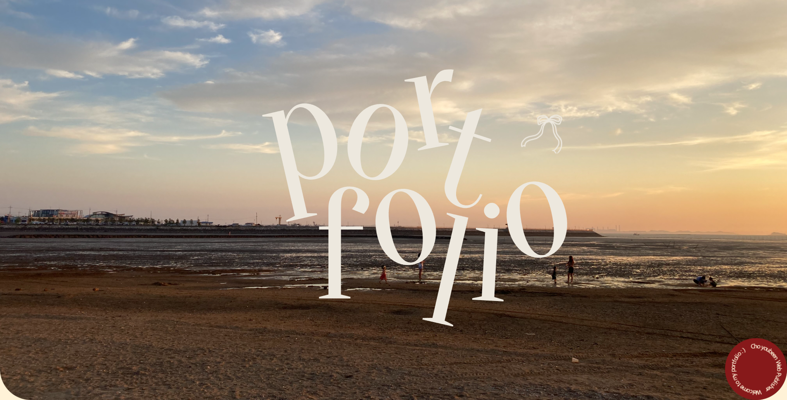
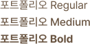

Portfolio

개인 포트폴리오 페이지를 취향을 담아 디자인하고 제작
웹폰트를 cdn방식으로 연결하고 주 서체 뒤쪽으로 시스템 서체를 폴백으로 연결하여 사용
포인트 폰트는 'Oranienbaum'으로 포트폴리오의 분위기에 맞는 sarif 폰트를 사용
메인 폰트는 'Pretendard'로 내용전달을 위한 포트폴리오의 특징에 맞게 보는 이의 편의성과 가독성을 고려하여 깔끔하고 읽기 편한 폰트를 사용
Oranienbaum
Pretendard
갈색과 베이지색을 중심으로 따뜻한 분위기를 내는 색상을 사용
톤다운 된 짙은 빨간 색상의 버튼으로 포인트로 주었고, 스크롤을 내렸을 때 따뜻하고 부드러운 연둣빛 색상을 사용하여 분위기는 유지시키면서 자연스럽게 변화를 줌
#6A5542
#6E6949
#871812
#FFF2D7
#EFF0C1

header메뉴의 nav 요소를 클릭 시 a가 가진 기능을 preventDefault()로 제거
각각의 section에 임의의 인덱스를 부여하여 부여된 인덱스 번호에 해당하는 section의 offsetTop으로 부드럽게 스크롤되어 가도록 설계
타이틀 각각의 문자에 클래스명을 부여한 후, gsap scroll trigger 패키지를 통하여 클래스에 애니메이션을 걸어주었고 특정위치에 스크롤이 닿으면 설정해 놓은 애니메이션이 시작되고 끝나도록 설정해줌
버튼 오브젝트를 pin: true를 이용하여 위치에 고정시킨 후 시작지점과 끝지점을 지정하여 스크롤 시 회전하도록 설계
오브젝트가 회전을 끝낸 특정 지점에 도달 시 x축 위치이동값을 주었고, scale값을 주어 크기를 변경시킴
오브젝트를 자체적으로도 일정한 속도로 무한 회전하도록 css애니메이션 부여
스크롤이 트리거인 특정 div의 상단에 도달하면 body가 가진 style값의 배경색을 변경하고 다시 div의 상단에 미치지 못했을 때 기본 배경색으로 되돌리도록 설계
헤더부분 또한 마찬가지의 과정으로 특정 위치에서 배경색 변경
전체적인 느낌에 어울리는 일러스트를 고민하는 부분에서 많은 고민을 함
-> 여러 일러스트를 그려보고 단순하면서도 포트폴리오의 전체적인 느낌을 최대한 담은 리본 모양의 일러스트를 선택
GSAP 패키지는 처음 사용해 보는거라 사용법을 익히고 적용하는데에 적지않은 시간이 소요됨
-> 미숙함이 있더라도 여러번의 시행착오를 겪으며 직접 여러 방식을 적용해보았고, 결국 원하는 결과물을 만듦
처음 디자인 하였던 footer부분 레이아웃의 구성의 어색함과 skill 섹션의 텍스트 여백의 조정의 필요성 피드백 받았음
-> footer부분에 있던 텍스트를 윗부분으로 올려 깔끔하게 변경하였으며, skill섹션의 텍스트도 가운데로 위치시키고 여백을 늘여 시각적으로 더 편안하게 보이도록 수정
온전히 나 자신을 보여주는 포트폴리오 인 만큼 나의 색과 애정이 가득한 작업이었다.
디저트 포장상자 같은 분위기를 생각하고 디자인 하였고 직접 찍은 사진, 직접 제작한 일러스트를 이용하였다.
포트폴리오를 제작하며 처음 GSAP 라이브러리도 공부하였는데 새로운 것을 공부하는게 흥미로웠고, 직관적인 적용 방식에 적용하는 바로바로 결과를 볼 수 있어 금방 익힐 수 있었다.
이렇게 스크롤 효과 몇가지만 들어가도 정적인 웹에 재미요소와 포인트를 줄 수 있었다. GSAP를 더 공부하여 여러 효과를 적용해보고 싶다.
새로운 것을 배우고 새로운 것을 제작하여 결과를 만들어 내는 것이 생각보다 더 보람되는 일인 것 같다. 앞으로도 많은것을 배우며 쌓아가고 싶다 :)